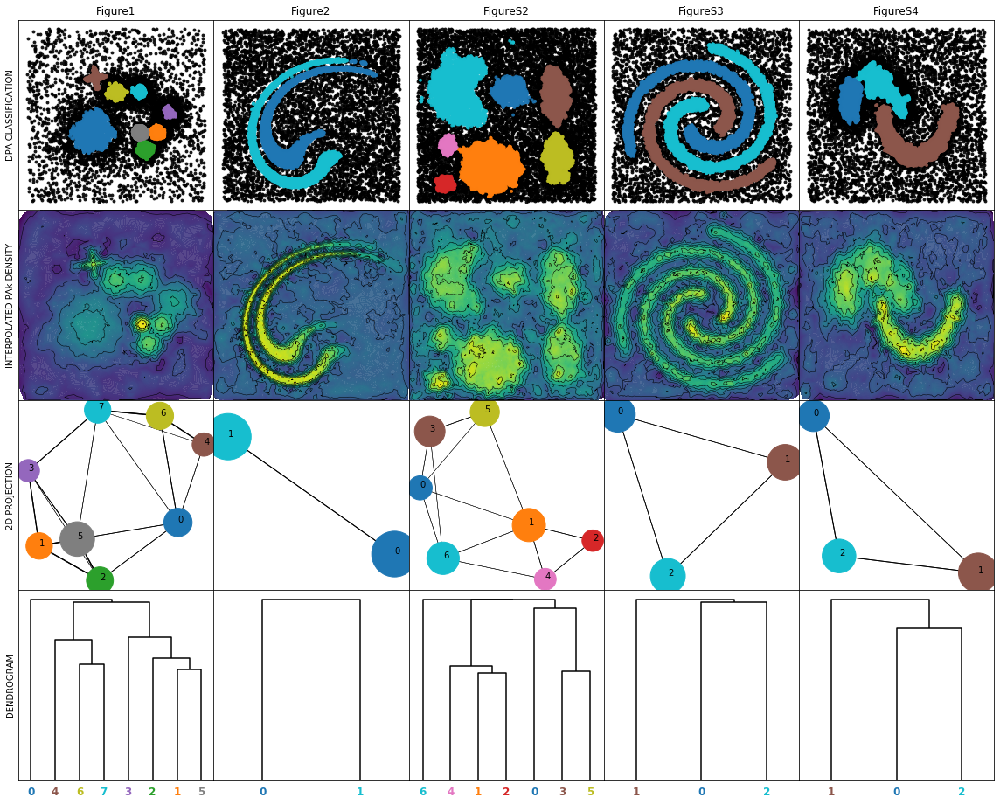

Clustering algorithms at comparison¶
The Density Peak Advanced clustering algorithm: Comparison with Density Peaks, Bayesian Gaussian Mixture Model, HDBSCAN* and Spectral Clustering algorithms.
[2]:
# Package import
import io
import sys
from Pipeline import DPA
from Examples.examples import example
from Examples.auxplot import *
import DP
[5]:
# Package import
# Time control and machine version
import time
import platform
import cpuinfo
# General tools for data loading and plotting
import numpy as np
import matplotlib.pyplot as plt
# Tools for the analysis of the topography
import scipy as sp
from sklearn import manifold
from scipy import cluster
from matplotlib.collections import LineCollection
# Validation tools (NMI & Confusion matrix)
from sklearn.metrics import confusion_matrix
from IPython.display import HTML, display
import tabulate
from sklearn.metrics.cluster import normalized_mutual_info_score
import pandas as pd
from IPython.core.interactiveshell import InteractiveShell
# Other packages (HDBSCAN* & Spectral clustering)
import hdbscan
import sklearn.cluster as cluster
%matplotlib inline
%load_ext autoreload
%autoreload 2
Specify the toy models and load them
[6]:
paper_figures=["1","2","S2","S3","S4"]
all=[]
for i in paper_figures:
all.append(example(i))
Set the characteristics of the clustering methods for each toy model
[7]:
#DPA
all[0].dpa_Z=1.5
all[1].dpa_Z=3.0
all[2].dpa_Z=2.5
all[3].dpa_Z=2.5
all[4].dpa_Z=3.0
#HDBSCAN
all[0].hdbscan_min_cluster_size=30
all[1].hdbscan_min_cluster_size=5
all[2].hdbscan_min_cluster_size=5
all[3].hdbscan_min_cluster_size=50
all[4].hdbscan_min_cluster_size=150
all[0].hdbscan_min_samples=55
all[1].hdbscan_min_samples=250
all[2].hdbscan_min_samples=250
all[3].hdbscan_min_samples=20
all[4].hdbscan_min_samples=100
#SPECTRAL
all[0].spect_n_clusters=7
all[1].spect_n_clusters=2
all[2].spect_n_clusters=6
all[3].spect_n_clusters=23
all[4].spect_n_clusters=5
all[0].spect_n_neighbors=400
all[1].spect_n_neighbors=1000
all[2].spect_n_neighbors=600
all[3].spect_n_neighbors=72
all[4].spect_n_neighbors=300
# Bayesian Gaussian Mixture model
all[0].dpgmm_n_components=25
all[1].dpgmm_n_components=25
all[2].dpgmm_n_components=9
all[3].dpgmm_n_components=18
all[4].dpgmm_n_components=6
all[0].dpgmm_random_state=142
all[1].dpgmm_random_state=142
all[2].dpgmm_random_state=141
all[3].dpgmm_random_state=142
all[4].dpgmm_random_state=142
all[0].dpgmm_n_init=50
all[1].dpgmm_n_init=50
all[2].dpgmm_n_init=100
all[3].dpgmm_n_init=50
all[4].dpgmm_n_init=50
# Standard density peaks
all[0].dp_percent=2.0
all[1].dp_percent=1.0
all[2].dp_percent=1.0
all[3].dp_percent=2.0
all[4].dp_percent=2.0
all[0].dp_dens_type="exp"
all[1].dp_dens_type="exp"
all[2].dp_dens_type="exp"
all[3].dp_dens_type="exp"
all[4].dp_dens_type="exp"
all[0].dp_delta_cut=1.8
all[1].dp_delta_cut=0.2
all[2].dp_delta_cut=4.
all[3].dp_delta_cut=5.
all[4].dp_delta_cut=15
all[0].dp_dens_cut=np.exp(3.)
all[1].dp_dens_cut=np.exp(5.)
all[2].dp_dens_cut=np.exp(5.)
all[3].dp_dens_cut=np.exp(6.)
all[4].dp_dens_cut=np.exp(6.)
[10]:
print (cpuinfo.get_cpu_info()['brand_raw'])
print (platform.platform())
Intel(R) Core(TM) i7-7800X CPU @ 3.50GHz
Linux-5.4.0-37-generic-x86_64-with-debian-bullseye-sid
[11]:
for i in range (5):
all[i].exe_dp()
all[i].exe_dpgmm()
all[i].exe_hdbscan()
all[i].exe_spect()
all[i].exe_dpa()
/home/alex/anaconda3/lib/python3.7/site-packages/sklearn/mixture/_base.py:267: ConvergenceWarning: Initialization 50 did not converge. Try different init parameters, or increase max_iter, tol or check for degenerate data.
% (init + 1), ConvergenceWarning)
/home/alex/anaconda3/lib/python3.7/site-packages/sklearn/mixture/_base.py:267: ConvergenceWarning: Initialization 50 did not converge. Try different init parameters, or increase max_iter, tol or check for degenerate data.
% (init + 1), ConvergenceWarning)
/home/alex/anaconda3/lib/python3.7/site-packages/sklearn/mixture/_base.py:267: ConvergenceWarning: Initialization 100 did not converge. Try different init parameters, or increase max_iter, tol or check for degenerate data.
% (init + 1), ConvergenceWarning)
/home/alex/anaconda3/lib/python3.7/site-packages/sklearn/mixture/_base.py:267: ConvergenceWarning: Initialization 50 did not converge. Try different init parameters, or increase max_iter, tol or check for degenerate data.
% (init + 1), ConvergenceWarning)
/home/alex/anaconda3/lib/python3.7/site-packages/sklearn/mixture/_base.py:267: ConvergenceWarning: Initialization 50 did not converge. Try different init parameters, or increase max_iter, tol or check for degenerate data.
% (init + 1), ConvergenceWarning)
[12]:
f, axes = plt.subplots(6, 5, figsize = (20, 24),gridspec_kw={'hspace': 0.0, 'wspace': 0})
for row in axes:
for elem in row:
elem.xaxis.set_major_locator(plt.NullLocator())
elem.yaxis.set_major_locator(plt.NullLocator())
axes[0,0].set_ylabel('GROUND TRUTH')
axes[0,0].set_yticks([])
axes[1,0].set_ylabel('DPA')
axes[1,0].set_yticks([])
axes[2,0].set_ylabel('HDBSCAN*')
axes[2,0].set_yticks([])
axes[3,0].set_ylabel('SPECTRAL CLUSTERING')
axes[3,0].set_yticks([])
axes[4,0].set_ylabel('DP')
axes[4,0].set_yticks([])
axes[5,0].set_ylabel('Bayesian GMM')
axes[5,0].set_yticks([])
for i in range (5):
axes[0,i].set_title('Figure'+all[i].name)
axes[0,i]=plot_w_noise(axes[0,i],all[i].data,all[i].gt,-1)
axes[1,i]=plot_w_noise(axes[1,i],all[i].data,all[i].dpa.halos_,-1)
axes[2,i]=plot_w_noise(axes[2,i],all[i].data,all[i].hdbscan_labels,-1)
axes[3,i]=plot_no_noise(axes[3,i],all[i].data,all[i].spect_labels)
axes[4,i]=plot_w_noise(axes[4,i],all[i].data,all[i].dp.halo,-1)
axes[5,i]=plot_no_noise(axes[5,i],all[i].data,all[i].dpgmm_labels)
plt.show()

DPA Topographies
[14]:
f, axus = plt.subplots(4, 5, figsize = (20, 16),gridspec_kw={'hspace': 0.0, 'wspace': 0})
for row in axus:
for elem in row:
elem.xaxis.set_major_locator(plt.NullLocator())
elem.yaxis.set_major_locator(plt.NullLocator())
axus[0,0].set_ylabel('DPA CLASSIFICATION')
axus[0,0].set_yticks([])
axus[1,0].set_ylabel('INTERPOLATED PAk DENSITY')
axus[1,0].set_yticks([])
axus[3,0].set_ylabel('DENDROGRAM')
axus[3,0].set_yticks([])
axus[2,0].set_ylabel('2D PROJECTION')
axus[2,0].set_yticks([])
for i in range (5):
axus[0,i].set_title('Figure'+all[i].name)
axus[0,i]=plot_w_noise(axus[0,i],all[i].data,all[i].dpa.halos_,-1)
axus[1,i]=plot_contour_interpolated(axus[1,i],all[i].data,all[i].dpa.densities_)
axus[3,i],axus[2,i]=plots_topography(all[i].dpa,axus[3,i],axus[2,i])
plt.show()

[16]:
from IPython.display import HTML, display
import pandas as pd
import tabulate
from IPython.core.interactiveshell import InteractiveShell
InteractiveShell.ast_node_interactivity = "all"
table_performance=[]
for i in range (5):
dpa_nmi,dpa_FNR,DPA_FPR=get_info_noise(all[i].dpa.halos_,all[i].gt)
hdbscan_nmi,hdbscan_FNR,hdbscan_FPR=get_info_noise(all[i].hdbscan_labels,all[i].gt)
spect_nmi=get_info_no_noise(all[i].spect_labels,all[i].gt)
dp_nmi,dp_FNR,DP_FPR=get_info_noise(all[i].dp.halo,all[i].gt)
bgmm_nmi=get_info_no_noise(all[i].dpgmm_labels,all[i].gt)
table_performance.append(["Fig. "+all[i].name,all[i].dpa_time,all[i].hdbscan_time,all[i].spect_time,all[i].dp_time,all[i].dpgmm_time,dpa_nmi,dpa_FNR,DPA_FPR,hdbscan_nmi,hdbscan_FNR,hdbscan_FPR,spect_nmi,dp_nmi,dp_FNR,DP_FPR,bgmm_nmi])
perform=pd.DataFrame(table_performance, columns=[" Name ","time DPA","time HDBSCAN*","time Spectral Clustering","time density peaks","time bayesian GMM","NMI DPA","FNR DPA","FPR DPA","NMI HDBSCAN*","FNR HDBSCAN*","FPR HDBSCAN*","NMI Spectral Clustering","NMI DP","FNR DP","FPR DP","NMI Bayes GMM"])
#display(perform)
display(HTML(tabulate.tabulate(perform,floatfmt=".3f", tablefmt='html',numalign="centre",headers=perform.columns)))
| Name | time DPA | time HDBSCAN* | time Spectral Clustering | time density peaks | time bayesian GMM | NMI DPA | FNR DPA | FPR DPA | NMI HDBSCAN* | FNR HDBSCAN* | FPR HDBSCAN* | NMI Spectral Clustering | NMI DP | FNR DP | FPR DP | NMI Bayes GMM | |
|---|---|---|---|---|---|---|---|---|---|---|---|---|---|---|---|---|---|
| 0 | Fig. 1 | 18.785 | 0.941 | 64.479 | 18.069 | 210.350 | 1.000 | 0.010 | 0.111 | 0.962 | 0.362 | 0.025 | 0.722 | 1.000 | 0.004 | 0.168 | 0.729 |
| 1 | Fig. 2 | 35.688 | 1.733 | 753.583 | 58.616 | 413.665 | 0.985 | 0.002 | 0.015 | 0.999 | 0.028 | 0.062 | 0.425 | 1.000 | 0.000 | 0.723 | 0.436 |
| 2 | Fig. S2 | 22.200 | 0.986 | 101.632 | 15.662 | 145.902 | 0.999 | 0.070 | 0.053 | 1.000 | 0.081 | 0.053 | 0.565 | 1.000 | 0.000 | 0.484 | 0.592 |
| 3 | Fig. S3 | 13.584 | 0.348 | 19.129 | 15.972 | 139.855 | 1.000 | 0.000 | 0.100 | 1.000 | 0.040 | 0.018 | 0.450 | 1.000 | 0.000 | 0.903 | 0.356 |
| 4 | Fig. S4 | 18.593 | 0.489 | 43.080 | 16.295 | 50.968 | 0.998 | 0.077 | 0.036 | 0.875 | 0.028 | 0.041 | 0.444 | 0.839 | 0.000 | 0.307 | 0.480 |
[ ]: